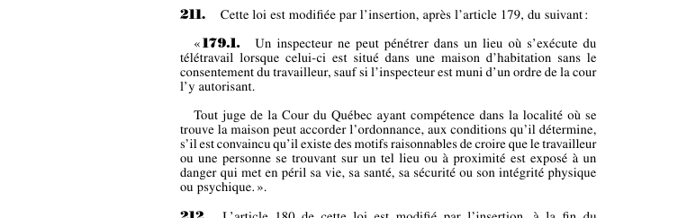

art-211-LMRSST : insertion après art. 179 LSST
📄 PDF officiel (page 66) · 🌐 LegisQuébec
Texte officiel : capture du PDF

🔗 Ouvrir a cette page : LMRSST.pdf : page 66
Article modificateur de la LMRSST (L.Q. 2021, c. 27).
- Insère un nouvel article dans la Loi sur la santé et la sécurité du travail (RLRQ c. S-2.1).
- Insère un nouvel article dans la Loi sur la santé et la sécurité du travail (RLRQ c. S-2.1), après l'art. 179.
Portée et effet
Adopté dans le cadre de la réforme de 2021 modernisant le régime de santé et de sécurité du travail, l'article 211 de la LMRSST insère une nouvelle disposition dans la LSST, en lien avec art. 179 LSST. Le texte en vigueur de la disposition visée intègre désormais cette modification ; le libellé exact figure dans la capture officielle ci-dessus. Le chapitre II de la LMRSST modernise la LSST : mécanismes de prévention et de participation des travailleurs, régime intérimaire et rôles des intervenants en santé et sécurité.
La jurisprudence porte sur la disposition modifiée, art. 179 LSST, et non sur l'article modificateur lui-même (les décisions et leurs PDF sont rassemblés sur la page de cet article).
Voir aussi
- 🎯 Article(s) modifié(s) : art. 179 LSST · obligation : un inspecteur peut pénétrer à toute heure raisonnable dans un lieu d'activités visé par la loi, accéder à tous les livres, registres et dossiers et doit exhiber son certificat s'il en est requis.
- 🗓️ Entrée en vigueur : 6 octobre 2021 (voir art. 313 LMRSST)
- 📚 Chapitre : Chap. II : modifications à la LSST
- ↑ Loi : LMRSST
Pages qui pointent ici (1)
- LMRSST - Chapitre II - Modifications à la LSST Recueil législatif